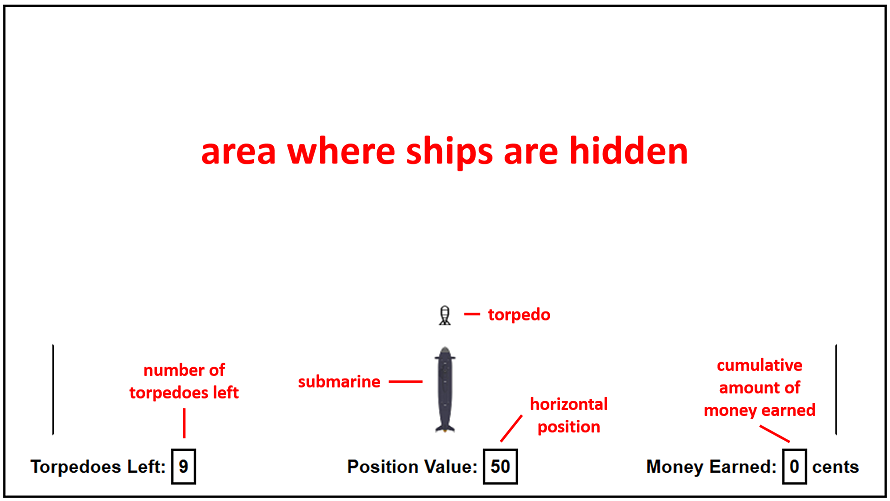

It appears that you are accessing this HIT from a mobile device. Mobile devices are not suitable for completing this HIT as a keyboard and screen with decent size are required.
Please feel free to try this HIT again when you are using a desktop or laptop.
Thank you!
Thank you for participating in our study.
You will play a game where you are the commander of a submarine. Your job is to find and attack enemy ships that will earn you points.
You will receive a minimum of $0.20 for completing this HIT, but you may earn up to $1.50 depending on the points you get.
This HIT should not take more than 15 minutes to complete. You must complete the entire HIT in one sitting without any distractions.
If you are not able to complete the HIT in one sitting, we ask that you start the HIT at another time when you are able to do so.
If you leave the HIT unattended for too long, the HIT may self-terminate and you may not be able to complete the HIT and obtain your payment.
Please use Firefox, Chrome, Safari, Microsoft Edge or Internet Explorer, as the game has only been tested for compatibility with these browsers.
Please maximize the broswer window, and do not navigate away from the HIT or press the refresh button at any point as this will disrupt the HIT.
If you are happy to proceed with this HIT, click "Continue".
This study has been approved by the UCL Research Ethics Committee CPB/2014/005.
The study is conducted by Mr. Yee Siang Chng under supervision of Dr. Maarten Speekenbrink
at the Department of Experimental Psychology, University College London.
Participation in this study is not compulsory.
If you choose not to participate, it will involve no penalty or loss of benefits to which you are otherwise entitled.
If you decide to take part, you are still free to withdraw at any time and without giving a reason.
Only unidentifiable demographic information such as age, gender and education level will be collected in this study.
All data will be collected and stored in accordance with the Data Protection Act 1998.
By continuing with the study, you are agreeing to the following:
Please read the instructions for the game carefully.
OBJECTIVE
Enemy ships with different points are hidden throughout the map,
and your job is to locate and fire at ships with the most points.
The horizontal position that your submarine fires from
determines the vertical distance the torpedo travels to.
But you will only know the distance travelled by the torpedo
and the points at that distance after you have fired.
POINTS
The points are determined by the ship's vertical distance from you.
In general, ships of similar points are at similar distances from you.
Hitting a ship will not destroy it, so you can keep
earning similar points by firing at the same location.
However, as the ships drift about on the water,
the distance they are at may fluctuate slightly.
Also, as the torpedoes are not always accurate,
the points at the same distance may fluctuate slightly.
Every cumulative 100 points increase your earnings by 1 cent.
Walkthrough of Game Display:
Please continue to read the instructions for the game carefully.
SCENARIOS
You will play the game in a total of scenarios.
Within a given scenario, the ships generally remain in the same locations.
However, in each new scenario, the locations of the ships may change,
so points at each location may not be same as the previous scenario.
AMMUNITION
You are only given torpedoes for each scenario.
You may choose to fire from the same horizontal position more than once.
GAME TIP
If there are two horizontal positions where the distance travelled
by the torpedoes are similar, the points should also be similar.
For example, if the torpedoes fired from Position "A" and Position "B"
travel over the same distance ("X"), then both positions will earn
a similar amount of points ("Y"). (See diagram below)
"X" is the distance travelled by the torpedo
and "+Y" is the points earned for that particular fire.
To read the instructions again, click "Back".
To start the first scenario, click "Begin".
The distance that the torpedo travels is determined by:
|
|
The amount of points of each ship is determined by:
|
|
If torpedoes fired from two different horizontal positions
travel a similar distance, their amount of points will be:
|
|
Use the arrow keys to move the submarine left and right. Press spacebar to fire at the ships.
Hitting a ship will not destroy it, so you may choose to fire from the same position more than once.
You scored points in this scenario.
Your scores from Scenario 1 to the current scenario are:
There are more scenarios to complete.
The locations of the enemy ships may have changed in the next scenario!
When you are ready, click "Continue" to begin the next scenario.
You scored points in this scenario.
Your total score is .
You've earned a total of .
Together with the $0.20 completion reward, you will receive .
Click "Continue" to answer some questions before completing this study.
Based on the last scenario, move the torpedoes/sliders to estimate the distance a torpedo will travel from a given position, and guess the respective points by entering the number in the boxes below the sliders.
| Position: | 0 |
| Distance: | 0 yards |
| Points: |
| Position: | 25 |
| Distance: | 0 yards |
| Points: |
| Position: | 25 |
| Distance: | 0 yards |
| Points: |
| Position: | 75 |
| Distance: | 0 yards |
| Points: |
| Position: | 100 |
| Distance: | 0 yards |
| Points: |
|
|
| Age: | |
| | |
| Gender: | |
| | |
| Education: | |
| | |
| Browser Used: | |
| |
Please ensure that all the information is correct before clicking submit.
Thank you for helping us in our study!
We request that you do not share the details of this experiment with other participants for the accuracy of our results. If you have any other questions regarding this study, please feel free to email our researchers.
Mr. Yee Siang CHNG (yee.chng.16@ucl.ac.uk)
Dr. Maarten SPEEKENBRINK (m.speekenbrink@ucl.ac.uk)
Please use the number below for the validation code in MTurk: